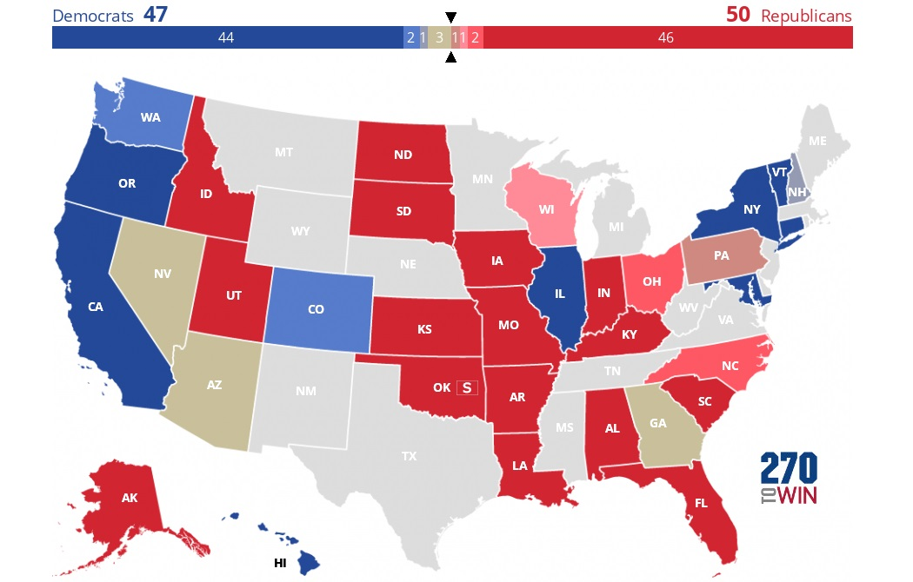

2022 Senate Ratings: Leans R
All data is my own, image created using 270towin.com
 Interactive Map| Senate Race | Rating |
|---|---|
| AK | Safe R |
| AL | Safe R |
| AR | Safe R |
| AZ | Toss-up |
| CA | Safe D |
| CO | Likely D |
| CT | Safe D |
| FL | Safe R |
| GA | Toss-up |
| HI | Safe D |
| IA | Safe R |
| ID | Safe R |
| IL | Safe D |
| IN | Safe R |
| KS | Safe R |
| KY | Safe R |
| LA | Safe R |
| MD | Safe D |
| MO | Safe R |
| NC | Likely R |
| ND | Safe R |
| NH | Tilt D |
| NV | Toss-up |
| NY | Safe D |
| OH | Likely R |
| OK | Safe R |
| OK-S | Safe R |
| OR | Safe D |
| PA | Tilt R |
| SC | Safe R |
| SD | Safe R |
| UT | Safe R |
| VT | Safe D |
| WA | Likely D |
| WI | Leans R |